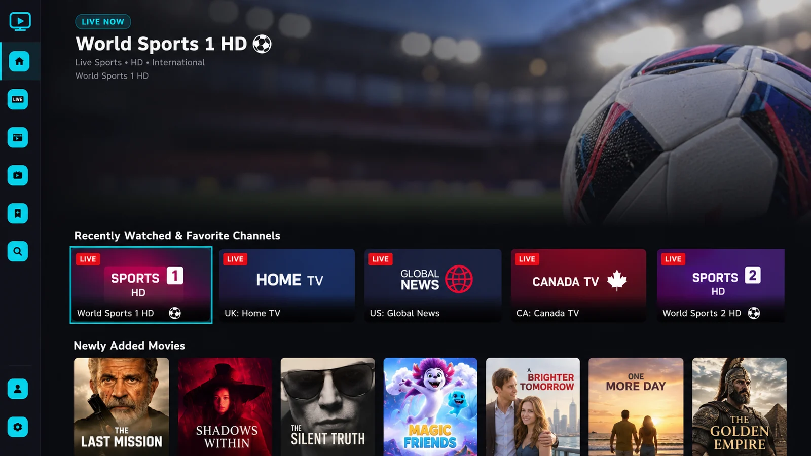
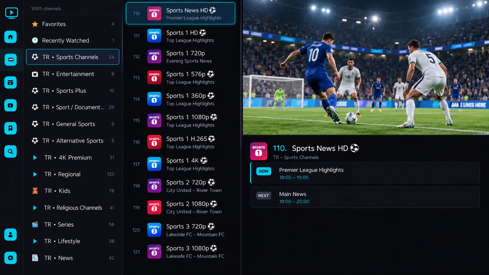
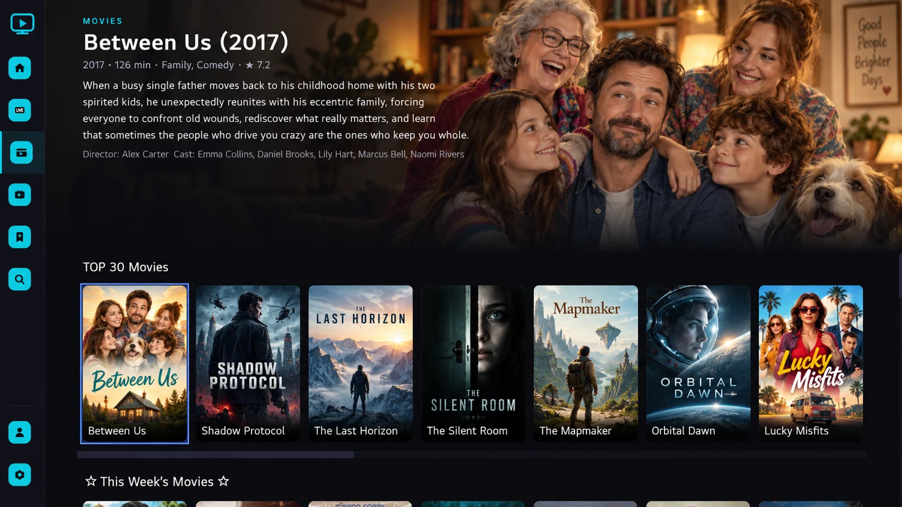
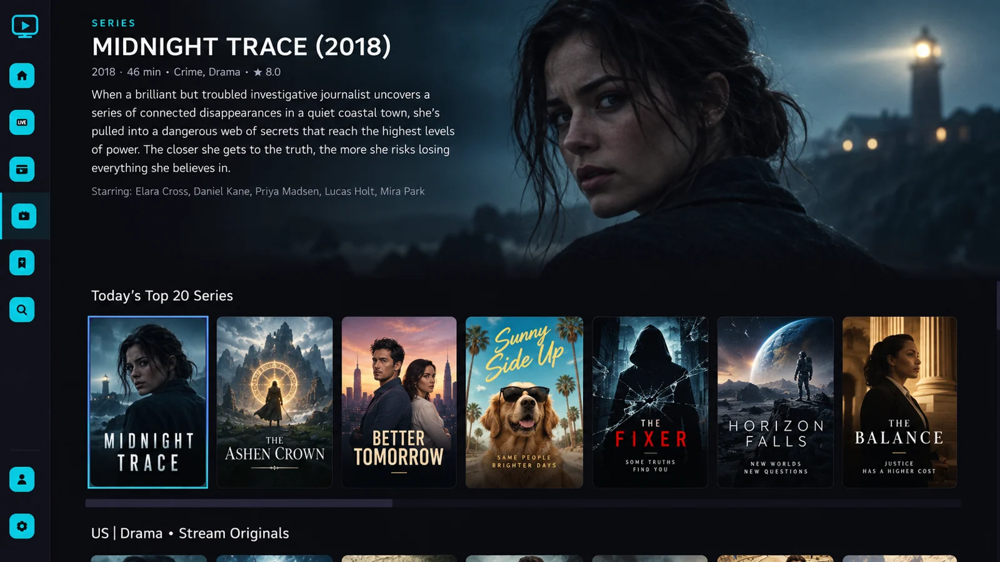
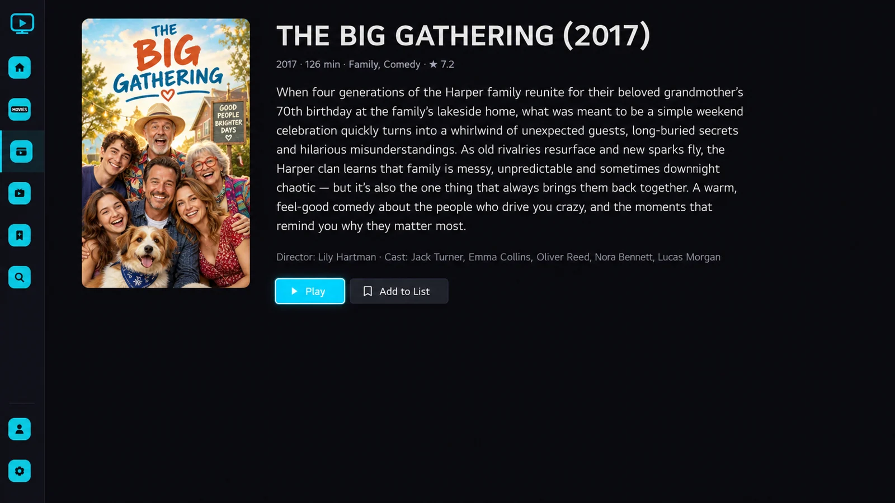
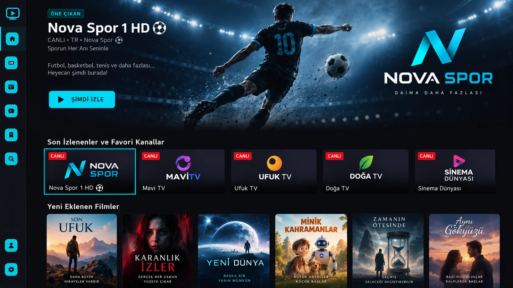
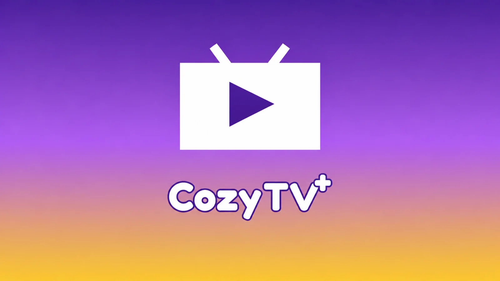

Modern Arayüz
LG webOS için TV kullanımına özel, hızlı ve sade bir kullanıcı deneyimi.
CozyTV+, kendi medya kaynaklarınızı LG webOS TV'nizde kolay, hızlı ve modern bir arayüzle kullanmanızı sağlayan bir medya oynatıcı uygulamasıdır.
LG Content Store yayını hazırlık aşamasında

Önizleme görselleri yalnızca arayüz tanıtımı amaçlıdır. Kullanılabilir başlıklar, diller ve yayın bilgileri medya kaynağınıza bağlıdır.
LG webOS için TV kullanımına özel, hızlı ve sade bir kullanıcı deneyimi.
Kendi medya listelerinizi ve yetkili olduğunuz kaynakları kolayca ekleyin.
Sık kullandığınız içeriklere daha hızlı erişin.
Desteklenen kaynaklarda EPG bilgilerini kullanarak yayın akışını görüntüleyin.
LG Magic Remote ve standart TV kumandaları için optimize edilmiş navigasyon.
Tek seferlik lisans satın alarak gelişmiş özelliklerin kilidini açın.
Karışık menüler olmadan hızlı tarama için düzenlendi.
Kanal gruplarını tarayın, o an ne oynadığını görün ve rehberdeki yerinizi kaybetmeden yayınlar arasında hızla geçiş yapın.

TV ekranları için yüksek yoğunluklu afiş düzeni. Konu özetlerine, süreye ve türlere kolayca erişin; kaldığınız yerden devam edin.

Dosya aramadan bir sonraki bölüme geçin. Uzaktan kumandayla kolay kullanım için tasarlanmış sezon seçici ve bölüm kartları.

Akıllı TV arayüzleri yüksek kontrastlı tipografi, net odak göstergeleri ve sıfır fare bağımlılığı gerektirir. CozyTV+, yön tuşları ve Magic Remote imleci çevresinde inşa edildi.
Odaklanan her öge odanın diğer ucundan dahi net biçimde parlar ve ölçeklenir.
Ekran üzerindeki oynatıcı kontrolleri otomatik gizlenerek ekranınızı açık tutar.
webOS arayüzünü dondurmadan büyük medya listelerini sorunsuz işler.
Arayüz yerleşimini yüksek çözünürlükte incelemek için herhangi bir önizlemeye tıklayın.

İçerik Detayları ↗
Türkçe Arayüz ↗Önizleme görselleri yalnızca arayüz tanıtımı amaçlıdır. Kullanılabilir başlıklar, diller ve yayın bilgileri medya kaynağınıza bağlıdır.
Abonelik yok. Otomatik yenileme yok. Tek seferlik ödeme.
CozyTV+ 15 günlük tam özellikli ücretsiz deneme süresi içerir. Güvenli ödeme altyapısıyla size en uygun lisansı seçin.
Tek cihaz için 1 yıl süreli Premium lisansı.
Tek cihaz için süresiz ve kalıcı Premium lisansı.
Yasal Tanım: CozyTV+ Premium ile satılan ürün dijital içerik değil, yazılım kullanım lisansıdır. Satın alma sonrasında ilgili CozyTV+ cihazına Premium uygulama özellikleri tanımlanır.
CozyTV+ 15 günlük ücretsiz deneme süresi içerir. Premium erişim, belirlenen cihaz için 1 yıllık lisans veya tek seferlik Ömür Boyu satın alma olarak sunulur. Ömür Boyu Premium, belirlenen cihaz için tek seferlik, süresi dolmayan bir Premium yazılım hakkıdır. Otomatik yenilenmez.
CozyTV+ uygulamasını LG webOS Smart TV cihazınıza indirin.
Yetkili medya kaynağınız tarafından sağlanan oynatma listesi URL veya erişim bilgilerinizi girin.
Canlı yayınlarınız, filmleriniz ve dizileriniz özel bölümlere otomatik olarak düzenlenir.
Hayır. CozyTV+ yalnızca bir medya oynatıcı uygulamasıdır ve herhangi bir IPTV hizmeti, TV kanalı veya medya içeriği sağlamaz.
Hayır. 1 yıllık ve ömür boyu lisanslar tek seferlik ödeme ile satın alınır.
Hayır. Süre sonunda tekrar ödeme yapılmadıkça yenilenmez.
Ömür boyu lisans, lisansın satın alındığı CozyTV+ cihazında süresiz Premium kullanım hakkı sağlar.
Ödeme doğrulandıktan sonra Premium lisansınız ilgili cihaz koduna tanımlanır.
Kullanıcıların eklediği standart m3u oynatma listeleri, HLS, DASH, MP4 ve yaygın webOS uyumlu video akışları desteklenir.

Oynatıcı, kurulum adımları veya yazılım lisanslamasıyla ilgili sorularınız için destek sayfamızı ziyaret edin.